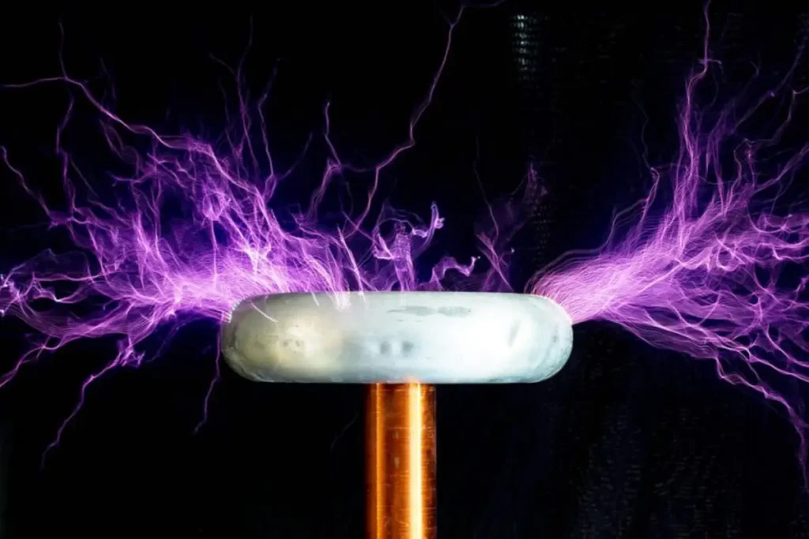

Quem foi Nikola Tesla?

Nikola Tesla (1856–1943) foi um inventor, engenheiro elétrico e mecânico sérvio-americano, amplamente conhecido por suas contribuições fundamentais ao desenvolvimento da eletricidade e do magnetismo. Tesla é lembrado principalmente por suas invenções relacionadas à corrente alternada (CA), que revolucionaram a forma como a eletricidade é distribuída e usada globalmente.
Ele nasceu na atual Croácia (na época, parte do Império Austro-Húngaro) e, em 1884, mudou-se para os Estados Unidos, onde trabalhou inicialmente com Thomas Edison. Tesla e Edison tiveram uma rivalidade histórica conhecida como "Guerra das Correntes", onde Tesla defendia a corrente alternada, enquanto Edison promovia a corrente contínua (CC). A CA de Tesla eventualmente prevaleceu, sendo mais eficiente para a distribuição de eletricidade em longas distâncias.
Projeto: Bobina de Tesla
TEMA: Desenvolver de forma caseira uma Bobina de Tesla e descobrir seu funcionamento.
OBJETIVO: Com esse trabalho desejamos realizar a bobina de tesla, com o objetivo de provar a teoria de tesla e como a energia eletromagnética de alta frequência funciona, e suas propriedades ao interagir com ambientes diferentes, além de como os objetos reagem em contato com a experiência.
JUSTIFICATIVA: Ter conhecimento maior sobre aqueles que formaram grande parte da física atual e suas experiências por conseguirem este status, e aprender sobre as forças que agem e rodeiam o funcionamento do projeto.
METODOLOGIA: Técnicas de conexão de componentes elétricos(soldagem, isolamento, conexão direta), junção de partes de componentes através de matérias colantes, cortes físicos em materiais.